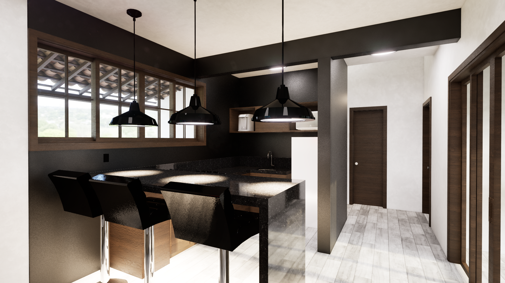
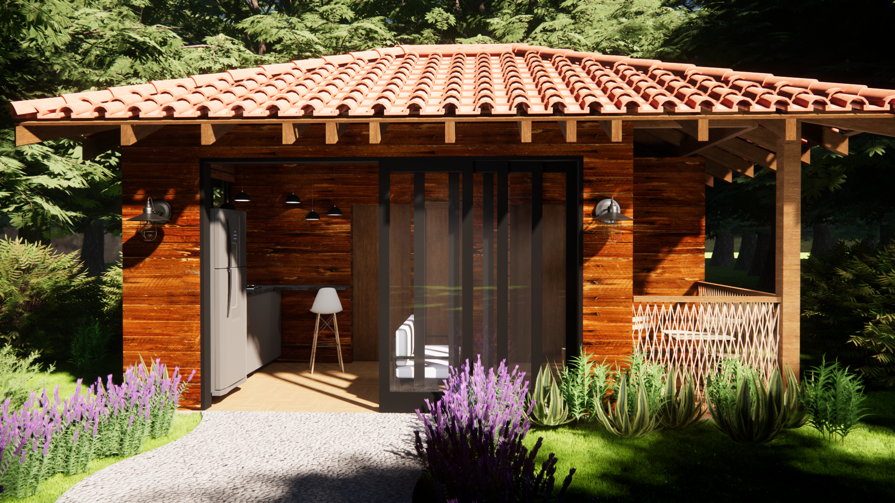
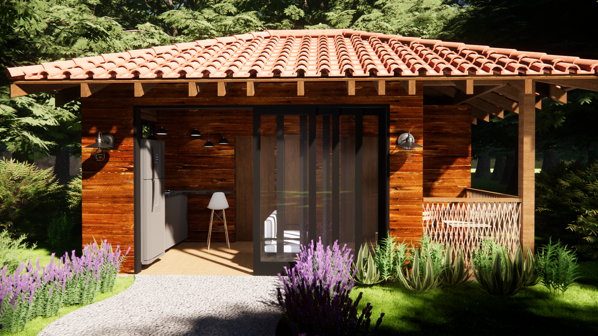

Projetos Arquitetônicos
Esta seção é dedicada à projetos selecionados realizados tanto no meu período de faculdade quanto fora dela. Cada projeto explora o espaço de maneira criativa e funcional com foco em criar experiências significativas para o usuário com base em suas expectativas.
 
